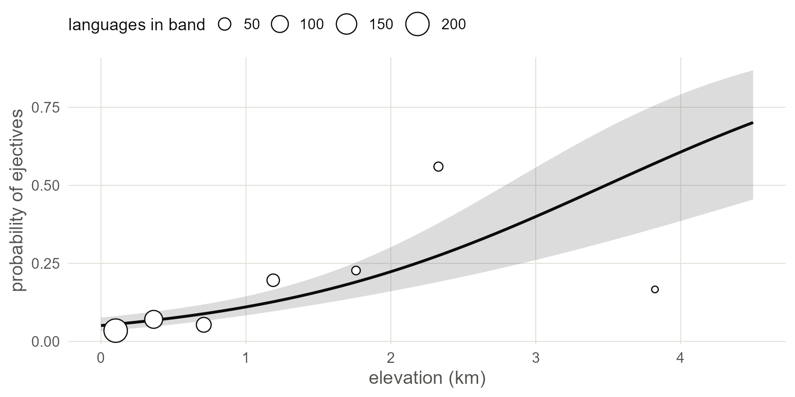
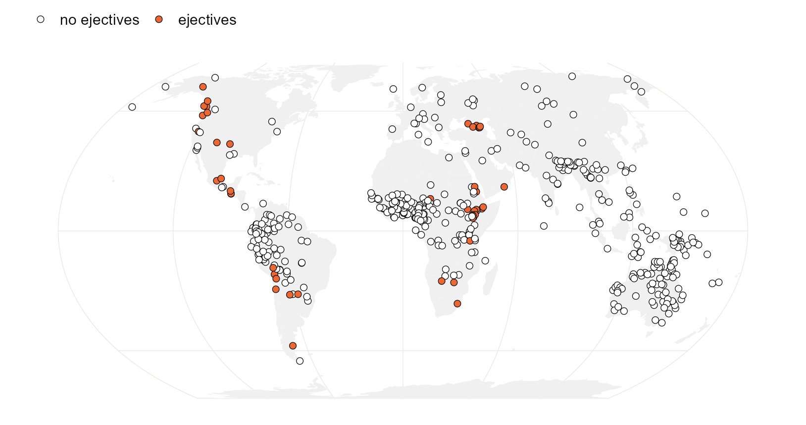
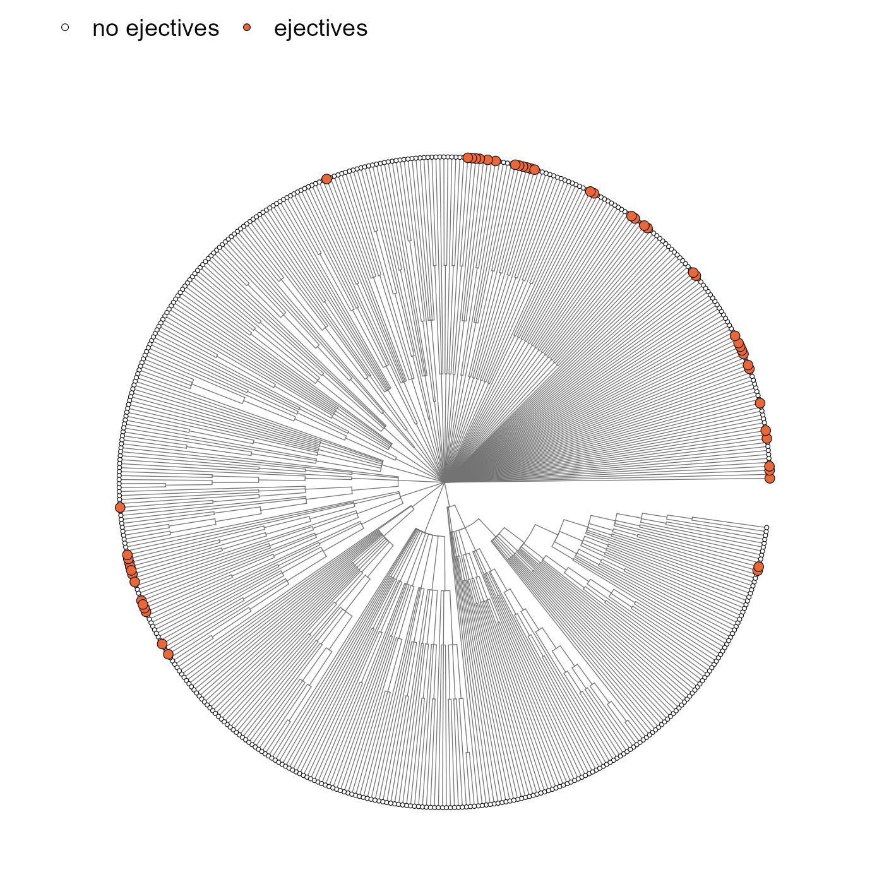
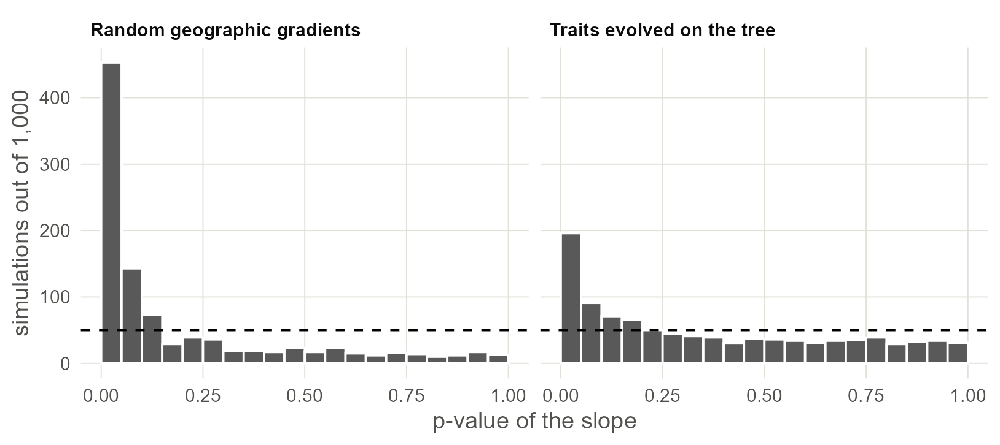

1 Seeing the problem
Fit the regression everyone fits first, then show with a map, a tree and two small simulations why its standard error cannot be trusted.
1.1 The data and the first model
Load the packages for this chapter and read the two files every chapter uses: one row per language, and a tree of the same languages.
library(ape)
library(phytools)
library(spdep)
library(sf)
library(rnaturalearth)
library(ggplot2)
base <- "https://rehan-muh.github.io/tutorials/data/"
d <- read.csv(paste0(base, "languages.csv"))
tree <- read.tree(paste0(base, "glottolog_tree.nwk"))
d$elev_km <- d$elevation / 1000
d[c(1, 120, 250, 380, 500), c("name", "family", "elevation", "ejectives")]## name family elevation ejectives
## 1 West Circassian Abkhaz-Adyge 235 1
## 120 Ginyanga Atlantic-Congo 299 0
## 250 Anindilyakwa Gunwinyguan 75 0
## 380 Djangun Pama-Nyungan 365 0
## 500 Ayoreo Zamucoan 233 0The question is Everett’s (2013): are languages spoken at altitude more likely to have ejectives? The obvious model is a logistic regression of ejectives on elevation in kilometres.
## Estimate Std. Error z value Pr(>|z|)
## (Intercept) -2.924 0.222 -13.19 0
## elev_km 0.839 0.147 5.72 0Each kilometre of altitude multiplies the odds of having ejectives by about 2.3, and the slope sits 5.7 standard errors from zero. Taken at face value this is overwhelming evidence.
Draw the fitted line over the data. predict() returns the line and its standard error on the logit scale; plogis() turns both into probabilities. The circles are the observed share of languages with ejectives in seven bands of elevation.
grid <- data.frame(elev_km = seq(0, 4.5, by = 0.05))
pr <- predict(m0, newdata = grid, se.fit = TRUE)
grid$p <- plogis(pr$fit)
grid$lo <- plogis(pr$fit - 1.96 * pr$se.fit)
grid$hi <- plogis(pr$fit + 1.96 * pr$se.fit)
breaks <- c(0, 0.25, 0.5, 1, 1.5, 2, 3, 5)
d$band <- cut(d$elev_km, breaks, include.lowest = TRUE)
obs <- aggregate(cbind(ejectives, elev_km) ~ band, data = d, FUN = mean)
obs$n <- as.vector(table(d$band))
ggplot(grid, aes(elev_km, p)) +
geom_ribbon(aes(ymin = lo, ymax = hi), alpha = 0.2) +
geom_line(linewidth = 0.9) +
geom_point(data = obs, aes(y = ejectives, size = n),
shape = 21, fill = "white") +
scale_size_area(max_size = 7, name = "languages in band") +
labs(x = "elevation (km)", y = "probability of ejectives")
Figure 1.1: The naive regression line with its 95% band. Circles are observed shares of ejective languages in seven elevation bands, sized by the number of languages in the band. The band is narrow because the model treats the 500 languages as independent.
That standard error assumes that the 500 languages are 500 independent observations. The rest of this chapter checks that assumption.
1.2 Where the ejectives are
Put the languages on a map. sf turns the coordinates into points, rnaturalearth supplies the land, and coord_sf() draws both in the Equal Earth projection.
world <- ne_countries(scale = "small", returnclass = "sf")
pts <- st_as_sf(d, coords = c("lon", "lat"), crs = 4326)
ggplot() +
geom_sf(data = world, fill = "grey94", colour = NA) +
geom_sf(data = pts, aes(fill = factor(ejectives)),
shape = 21, size = 1.9, stroke = 0.3) +
scale_fill_manual(values = c("0" = "white", "1" = "#EB6834"),
labels = c("no ejectives", "ejectives"), name = NULL) +
coord_sf(crs = "+proj=eqearth")
Figure 1.2: The 500 languages of the sample. Languages with ejectives form a handful of regional clusters.
The 50 languages with ejectives sit in a few regions rather than spread evenly over the high ground of the world. Count the families they belong to:
##
## Afro-Asiatic Mayan Nakh-Daghestanian South Omotic
## 13 3 3 3
## Atlantic-Congo Kiowa-Tanoan Salishan Ta-Ne-Omotic
## 2 2 2 2## [1] 27One family, Afro-Asiatic, supplies 13 of the 50. The rest come from 26 other families, yet on the map they still sit side by side: several unrelated families in the Caucasus, several in the Pacific Northwest, several in the Andes. Clustering inside a family points to inheritance and clustering across families points to contact, and this sample has both.
Now the tree. ggtree draws it as a fan, one wedge per family, and %<+% attaches the data so the tips can be coloured.
library(ggtree)
ggtree(tree, layout = "fan", open.angle = 8,
linewidth = 0.2, colour = "grey45") %<+% d +
geom_tippoint(aes(fill = factor(ejectives), size = factor(ejectives)),
shape = 21, stroke = 0.25) +
scale_fill_manual(values = c("0" = "white", "1" = "#EB6834"),
labels = c("no ejectives", "ejectives"), name = NULL) +
scale_size_manual(values = c("0" = 0.9, "1" = 2.2), guide = "none")
Figure 1.3: The Glottolog tree of the sample, one tip per language. Tips with ejectives tend to sit next to other tips with ejectives. Families meet only at the centre: the tree claims no relationship between them.
Both pictures show that if you know one language has ejectives, you can guess that its sisters and its neighbours do too. Those languages are partly repeating each other, and a model that counts each as fresh evidence is counting too much.
1.3 How often does a meaningless predictor pass?
A direct way to see the damage is to invent predictors that cannot have anything to do with ejectives and count how often the regression calls them significant. If the model is honest, that happens 5% of the time. Roberts and Winters (2013) used the same logic with real but irrelevant variables to show how easily chains of spurious correlations can be built from cross-linguistic data.
First, 1,000 made-up traits that evolve along the tree by Brownian motion. Each is inherited with random changes and nothing else. fastBM() simulates them all at once.
set.seed(1)
fake_phy <- fastBM(tree, nsim = 1000)[d$glottocode, ]
p_value <- function(x) {
summary(glm(d$ejectives ~ x, family = binomial))$coefficients[2, 4]
}
p_phy <- apply(fake_phy, 2, p_value)
mean(p_phy < 0.05)## [1] 0.196Second, 1,000 made-up geographic gradients. Pick a random direction through the globe and score each language by how far along it the language lies. Latitude is one such gradient; these are 1,000 others.
rad <- pi / 180
xyz <- cbind(cos(d$lat * rad) * cos(d$lon * rad),
cos(d$lat * rad) * sin(d$lon * rad),
sin(d$lat * rad))
fake_sp <- xyz %*% t(matrix(rnorm(3000), ncol = 3))
p_sp <- apply(fake_sp, 2, p_value)
mean(p_sp < 0.05)## [1] 0.453sims <- data.frame(
p = c(p_phy, p_sp),
kind = rep(c("Traits evolved on the tree", "Random geographic gradients"),
each = 1000))
ggplot(sims, aes(p)) +
geom_histogram(breaks = seq(0, 1, 0.05), fill = "grey35", colour = "white") +
geom_hline(yintercept = 50, linetype = "dashed") +
facet_wrap(~kind) +
labs(x = "p-value of the slope", y = "simulations out of 1,000")
Figure 1.4: P-values from 1,000 regressions of ejectives on a predictor with no connection to them. An honest test would give a flat histogram, with 5% of p-values in the first bar (dashed line).
A trait that only follows the tree passes the 5% test 20% of the time, close to four times too often. A random gradient across the map passes 45% of the time, close to a coin flip. Elevation is the same kind of variable: it is shared by neighbours, and relatives tend to live near each other. So a small p-value for elevation tells us very little until the dependence between languages is in the model.
What this assumes. These simulations hold the real ejective data fixed and randomise the predictor. That is the right comparison for one question only, which is whether a predictor with this much spatial or genealogical structure could pass by accident. The simulations show that it easily can.
1.4 Measuring spatial dependence: Moran’s I
The simulations show the problem exists. Two standard statistics measure how much of it is left in a model’s residuals.
Moran’s I is a correlation between each language’s value and the average of its neighbours (Moran 1950; Bivand et al. 2013). It needs a definition of “neighbour”. Here each language is linked to its five nearest, by great-circle distance, and links are made mutual.
coords <- as.matrix(d[, c("lon", "lat")])
nb <- knn2nb(knearneigh(coords, k = 5, longlat = TRUE))
nb <- make.sym.nb(nb)
lw <- nb2listw(nb, style = "W")
moran.mc(residuals(m0, type = "pearson"), lw, nsim = 999)##
## Monte-Carlo simulation of Moran I
##
## data: residuals(m0, type = "pearson")
## weights: lw
## number of simulations + 1: 1000
##
## statistic = 0.4, observed rank = 1000, p-value = 0.001
## alternative hypothesis: greaterUnder independence I is close to zero. The residuals of the elevation model have I = 0.44, larger than every one of 999 random reshufflings of the residuals over the map. The model errs in the same direction for a language and for its neighbours.
1.5 Measuring phylogenetic signal
The genealogical counterpart asks how much of a variable’s variation follows the tree. Pagel’s λ (Pagel 1999; Freckleton et al. 2002) runs from 0 (relatives are no more alike than strangers) to 1 (as alike as Brownian motion along the tree predicts). phylosig() estimates it for a named vector of values.
res <- setNames(residuals(m0, type = "pearson"), d$glottocode)
phylosig(tree, res, method = "lambda", test = TRUE)##
## Phylogenetic signal lambda : 1.08325
## logL(lambda) : -605.72
## LR(lambda=0) : 160.594
## P-value (based on LR test) : 8.39177e-37The estimate is at its ceiling. (The ceiling depends on the shape of the tree and can sit a little above 1, as it does here.) Relatives are at least as alike in their residuals as the tree predicts, and the test against λ = 0 leaves no doubt. The same call works for any continuous variable. Consonant inventory size, on the log scale, is a useful second example because it will come back in Chapter 4:
log_cons <- setNames(log(d$n_consonants), d$glottocode)
phylosig(tree, log_cons, method = "lambda", test = TRUE)##
## Phylogenetic signal lambda : 1.08325
## logL(lambda) : -100.842
## LR(lambda=0) : 219.301
## P-value (based on LR test) : 1.28492e-49Watch out. λ and Moran’s I are built for continuous values. Applied to the residuals of a logistic regression they are a serviceable alarm but should not be read as a measurement. For a binary feature the dependence is better estimated inside the model itself, which is what the next chapters do.
With your own data. You need three things: a data frame with one row per language, a
phyloobject whose tip labels match a column of that data frame, and coordinates. Check the match before anything else withsetdiff(tree$tip.label, d$glottocode); it should return nothing in either direction.
1.6 What to carry forward
- The naive slope is 0.84 per kilometre with a standard error of 0.15. Keep these two numbers in mind; every later chapter re-estimates them.
- Ejectives cluster in families and in regions, and the residuals of the naive model inherit both kinds of clustering.
- With data like these, predictors that mean nothing pass a 5% test 20% to 45% of the time.
There are two ways forward. One models who is related to whom (Chapter 3). The other models who lives near whom (Chapters 6 and 7). Chapter 9 puts them in one model.
1.7 Further reading
How the field has handled it. The problem was named long before it was modelled: Galton raised it in 1889 against a cross-cultural correlation, and Naroll (1961) surveys the early remedies. Typology’s first answer was sampling, choosing languages so that they could be treated as independent (Dryer 1989; Perkins 1989). Regression with grouping factors for family and area came next (Jaeger et al. 2011), and regression with tree-based and distance-based covariance after that (Guzmán Naranjo and Becker 2022; Skirgård et al. 2023). The ejectives claim followed the same arc. Everett (2013) supported it with comparisons inside regions and families. Later reanalyses with explicit genealogical and areal controls (Urban and Moran 2021) are the kind of analysis the rest of this book builds.
This chapter used the two most common diagnostics. There is more to measure and better ways to measure it.
- Signal in a binary feature. Pagel’s λ and Blomberg’s K assume a continuous trait. The D statistic of Fritz and Purvis (2010) is built for binary ones and is implemented as
phylo.d()in thecaperpackage. Münkemüller et al. (2012) compare the signal statistics and show when each can be trusted. - The same problem in other fields. Ives and Zhu (2006) treat phylogenetic, spatial and temporal correlation as one statistical problem, which is the view this series takes. Dormann et al. (2007) review the spatial remedies and Bromham et al. (2018) make the case for controlling relatedness and proximity together in cross-cultural work.
- Why correlations are cheap. Roberts and Winters (2013) and Ladd et al. (2015) are the best accounts of how easily cross-linguistic correlations arise and what should be asked of one before believing it.
- When one event does all the work. Maddison and FitzJohn (2015) and Uyeda et al. (2018) show that a single change deep in a tree can produce a strong correlation at the tips. Phylogenetic signal statistics do not detect this, so you have to ask how many independent origins a feature has.